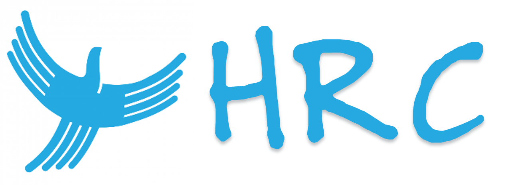

List of Charities
Charity Name: Arise
Arise supports women and children who have experienced domestic violence,
enabling them to rebuild their lives. The impact of domestic violence is far reaching,
impacts the whole community and can continue for generations.
For over 20 years, Arise has provided services that include:
- Risk assessments and finding safe accommodation
- Providing information on domestic violence services, legal advice, financial
counselling, health services and support groups
- Legal and court support
Support Arise to make a better future for women and children.

Charity Name: Aves Do Brasil
You can help save birds that are considered critically endangered and at risk of
extinction in the wild.
The endangered birds include the black-hooded ant wren, the cherry-throated
tanager, the fringe-backed fire-eye and the south-eastern rufous-vented groundcuckoo.
Your donations can help protect Brazil’s Cerrado region, a unique savannah area
where many at risk species are found.

Charity Name: Clara Santos Oliveira Institute
The Clara Santos Oliveira Institute is a non-governmental, non-profit organisation
based in Sao Paulo. Clara founded the institute in 1986 to provide shelter and
education to young people who have been through the juvenile court. Today there
are five houses in Sao Paulo and we want to expand and set up another three by
2020.
Charity Name: Conquer Cancer Brazil
Conquer Cancer Brazil (CCB) is dedicated to helping discover the treatments and
cures for cancer by funding world class research within Brazil. We raise funds
exclusively for research into the prevention, diagnosis and treatments for ALL types
of cancer, in centres right across Brazil.
Help us work to change the lives of millions of people.

Charity Name: Diabetes Brazil
Diabetes Brazil is committed to reducing the impact of diabetes through education,
early detection and support.
Diabetes is the leading cause of adult blindness, of kidney failure and increases the
risk of heart attacks and strokes by up to 400%.
Your support helps us to continue our life-saving work.

Charity Name: Hearth Health San0 Paulo
For over 50 years, Heart Health São Paulo has been dedicated to saving lives by
making a difference to the heart health of our people. Donations help us fund
valuable research, develop guidelines for health professionals, support patient care
and help Paulistas to live healthier lifestyles.

Charity Name: Human Rights Centre-Sao Paulo
The Human Rights Centre protects and promotes human rights in Brazil and in
Brazilian activities overseas. This is done through legal action, advocacy and
research. The HRC is an independent, not-for-profit, non-government organisation
and is a registered charity.
We work with community organisations, law firms, academics and other experts in
the field of domestic and international human rights.

Charity Name: Stay Pumped
Stay Pumped is a charity that helps retired professional sports people who often
struggle to adjust to life after sport. Many are underprepared, lacking education
and life skills required to make the enormous adjustment. They often have the
added burden of injury.
Stay Pumped is staffed by professional and volunteers. We rely on donations to
carry out this most necessary work.

Charity Name:Upbeat SP
Upbeat SP is a not-for-profit organisation that offers support for those suffering from
mood disorders such as depression and bipolar disorder. In addition we conduct
research studies to help with the understanding of mood disorders. Our latest
project is working to use technology to solve mental health issues. We are looking at
social media as an indicator of mental health, and also at using mobile phones to
measure mental health.
Help us continue the great work we are doing.

Charity Name: WWSM Rescue
The small WWSM Rescue organisation works tirelessly devoting itself to the
preservation of the White Whiskered Spider Monkey. Deforestation and conversion of
land for agriculture has severely impacted on this monkey’s home. Unfortunately
they are also hunted and have been pushed to the brink of extinction.
WWSM Rescue needs your help to raise the profile of the white whiskered spider
monkey in local communities.
Charity Name: The Red Cross
Relief in times of crisis, care when it's needed most and commitment when others
turn away. Red Cross is there for people in need, no matter who you are, no matter
where you live.
The Red Cross Red Crescent Movement helps tens of millions of people around the
world each year and we also care for local communities in our local country and
further afield.
With millions of volunteers worldwide and thousands of members, volunteers and
supporters, we can reach people and places like nobody else.

Charity Name: Oxfam International
Oxfam is an international confederation of 17 organizations working together with
partners and local communities in more than 90 countries.
One person in three in the world lives in poverty. Oxfam is determined to change
that world by mobilizing the power of people against poverty.
Around the globe, Oxfam works to find practical, innovative ways for people to lift
themselves out of poverty and thrive. We save lives and help rebuild livelihoods
when crisis strikes. And we campaign so that the voices of the poor influence the
local and global decisions that affect them.
In all we do, Oxfam works with partner organizations and alongside vulnerable
women and men to end the injustices that cause poverty.

Charity Name: Save the Children Fund
Save the Children is the world's leading independent organisation for children. We
work in around 120 countries. We save children's lives; we fight for their rights; we
help them fulfil their potential.
We work to inspire breakthroughs in the way the world treats children and to
achieve immediate and lasting change in their lives. Across all of our work, we
pursue several core values: accountability, ambition, collaboration, creativity and
integrity.
In 2014, we reached over 55 million children directly through our and our partners'
work.
Donate now to help us how the children of the world.

Charity Name: Querstadtein Berlin
querstadtein is the first project of Stadtsichten e.V., a registered non-profit
association.
Although it is visible everywhere in the city, homelessness is rarely discussed. On a
theoretical level we often know very little about a topic that confronts us in the
streets every day. Through querstadtein we would like to raise awareness of this issue.
It all started with the desire of our two founders to get something ‘real’ off the
ground in Berlin, to actively tackle an issue instead of just thinking about it. Homeless
people seemed to be everywhere, throughout the city and on the daily commute
to the office. Some of them were there day in, day out, in the U-Bahn or on the
street. The divide between the homeless people and the rest of society was striking.
This is where we wanted to be active – to create a space which would facilitate
encounters, exchange and awareness.
We would like your help to help the homeless in Berlin.